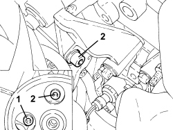
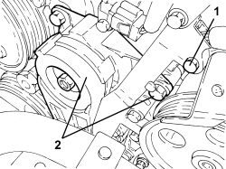
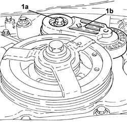
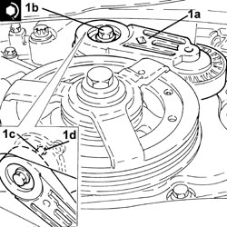
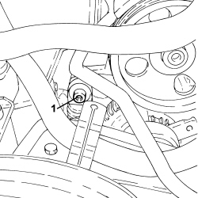
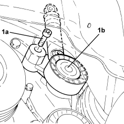

1092G14 ENGINE COMPONENT SINGLE BELT MOVING TENSIONER - R + R
- Path
- Procedures > 10 ENGINE > 1092 ENGINE COMPONENT MISCELLANEOUS DRIVES > 1092G SINGLE DRIVE BELT FOR VARIOUS ENGINE COMPONENTS > 1092G14 ENGINE COMPONENT SINGLE BELT MOVING TENSIONER - R + R
- Kind
- repair procedure (removal / refitting; the operation number is the code)
- Applies to
- all engines; all production periods
- Interactive page
- https://sloeber94.github.io/elrnDB-aBrrSpdr/en/#/946002037
Applies to: engines: 3.2 JTS; all production periods
 Removing
Removing
 Refitting
Refitting- Position the vehicle on a lift.
Op. 4450B04 RIGHT FRONT WHEEL - R.R
Op. 7055B66 ENGINE COMPARTMENT DUST COVER IN RIGHT FRONT WHEEL ARCH - R.R.
Op. 7055B91 RIGHT FRONT WHEEL ARCH LINER - R.R.
Op. 1008B10 POWER UNIT FRONT SUPPORT FLEXIBLE MOUNTING (TIMING SIDE) - REPLACE
Op. 1008A46 POWER UNIT RIGID SUPPORT - TIMING SIDE - R.R.
Op. 1092G10 SINGLE ENGINE BELT - R.R
1. Undo the lower front bolt securing the power assisted steering pump to the support.
2. Loosen the upper front bolt and the rear bolt fastening the power assisted steering pump to the support.
- Move the power assisted steering pump away from the moving tensioner.

Applies to: engines: 3.2 JTS; all production periods
1. Unscrew the bolt securing the engine wiring duct.
2. Undo the bolts securing the moving tensioner and remove it.

Applies to: engines: 3.2 JTS; all production periods
Refitting
Removing- Place the moving tensioner in its housing and secure it using the bolts.
- Place the engine wiring in its housing and fasten the duct using the bolt.
- Place the power assisted steering pump in its housing and secure it to the support using the bolts.
Op. 1092G10 SINGLE ENGINE BELT - R.R
Op. 1008A46 POWER UNIT RIGID SUPPORT - TIMING SIDE - R.R.
Op. 1008B10 POWER UNIT FRONT SUPPORT FLEXIBLE MOUNTING (TIMING SIDE) - REPLACE
Op. 7055B91 RIGHT FRONT WHEEL ARCH LINER - R.R.
Op. 7055B66 ENGINE COMPARTMENT DUST COVER IN RIGHT FRONT WHEEL ARCH - R.R.
Applies to: engines: 2.2 JTS; all production periods
Removing
Refitting- Position the vehicle on a lift.
Op. 4450B04 RIGHT FRONT WHEEL - R.R
Op. 7055B66 ENGINE COMPARTMENT DUST COVER IN RIGHT FRONT WHEEL ARCH - R.R.
Op. 4410D16 BRACKET (ONE) RETAINING CHASSIS TO BODY - R R
Op. 1092G10 SINGLE ENGINE BELT - R.R
1. Undo the bolt (1a) and remove the engine components single belt moving tensioner (1b).

Applies to: engines: 2.2 JTS; all production periods
Refitting
Removing1. Position the auxiliary drivebelt moving tensioner (1a) in its housing and secure it tightening the bolt (1b) to the recommended torque.
Component | Fastening | dia | Value (daNm) | Validity |
|---|---|---|---|---|
Auxiliary drive belt moving tensioner | Bolt | M10 | (engine block side) 4.3 | 1.9 JTS 2.2 JTS |

Applies to: engines: 2.2 JTS; all production periods
Op. 1092G10 SINGLE ENGINE BELT - R.R
Op. 4410D16 BRACKET (ONE) RETAINING CHASSIS TO BODY - R R
Op. 7055B66 ENGINE COMPARTMENT DUST COVER IN RIGHT FRONT WHEEL ARCH - R.R.
Op. 4450B04 RIGHT FRONT WHEEL - R.R
- Remove the vehicle from the lift.
Applies to: engines: 2.4 JTD 20v; all production periods
Removing
Refitting- Position the vehicle on a lift.
Op. 1048A41 HOSE FROM FLOW METER TO TURBOCHARGER - R.R.
Op. 4450B04 RIGHT FRONT WHEEL - R.R
Op. 7055B66 ENGINE COMPARTMENT DUST COVER IN RIGHT FRONT WHEEL ARCH - R.R.
Op. 7055B91 RIGHT FRONT WHEEL ARCH LINER - R.R.
Op. 1092G10 SINGLE ENGINE BELT - R.R
1. Unscrew the upper bolt securing the auxiliary drivebelt mobile tensioner.

Applies to: engines: 2.4 JTD 20v; all production periods
1. Undo the lower bolt (1a) and remove the engine components single belt moving tensioner (1b).

Applies to: engines: 2.4 JTD 20v; all production periods
Refitting
Removing- Position the engine components single belt moving tensioner in its housing and secure it tightening the bolt to the recommended torque.
Component | Fastening | dia | Value (daNm) | Validity |
|---|---|---|---|---|
Auxiliary drive belt moving tensioner | Bolt | M8 | 2.3 ÷ 2.5 | 2.4 JTD 20V |
Op. 1092G10 SINGLE ENGINE BELT - R.R
Op. 7055B91 RIGHT FRONT WHEEL ARCH LINER - R.R.
Op. 7055B66 ENGINE COMPARTMENT DUST COVER IN RIGHT FRONT WHEEL ARCH - R.R.
Op. 4450B04 RIGHT FRONT WHEEL - R.R
Op. 1048A41 HOSE FROM FLOW METER TO TURBOCHARGER - R.R.
- Remove the vehicle from the lift.
Topics linked from this page (8)
- 1008A46 POWER UNIT RIGID SUPPORT - TIMING SIDE - R.R.
- 1008B10 POWER UNIT FRONT SUPPORT FLEXIBLE MOUNTING (TIMING SIDE) - REPLACE
- 1048A41 HOSE FROM FLOW METER TO TURBOCHARGER - R.R.
- 1092G10 SINGLE ENGINE BELT - R.R
- 4410D16 BRACKET (ONE) RETAINING CHASSIS TO BODY - R R
- 4450B04 RIGHT FRONT WHEEL - R.R
- 7055B66 ENGINE COMPARTMENT DUST COVER IN RIGHT FRONT WHEEL ARCH - R.R.
- 7055B91 RIGHT FRONT WHEEL ARCH LINER - R.R.
Topics that link to this page (8)
- 1020D14 FRONT CRANKSHAFT OIL SEAL COVER - R.R AND REPLACE SEALS FOR VERSIONS WITH OIL PUMP ON CRANKSHAFT, TIMING SIDE
- 1032A10 CHAIN GEARS AND TIMING SYSTEM COMPONENTS R R
- 1032A12 TIMING SYSTEM DRIVE CHAIN - R.R
- 1032C41 TIMING SYSTEM FIXED CHAIN TENSIONER PAD R R
- 1084B12 ENGINE OIL PUMP - R+R
- 1092B82 AUXILARY BELT MOVING TENSIONER (ONE) -R+R
- 1092B92 WATER PUMP /BALANCING SHAFT DRIVE CHAIN HYDRAULIC TENSIONER R R
- 1092G15 ENGINE COMPONENT SINGLE BELT MOVING TENSIONER - R.R. WITH BELT REMOVED